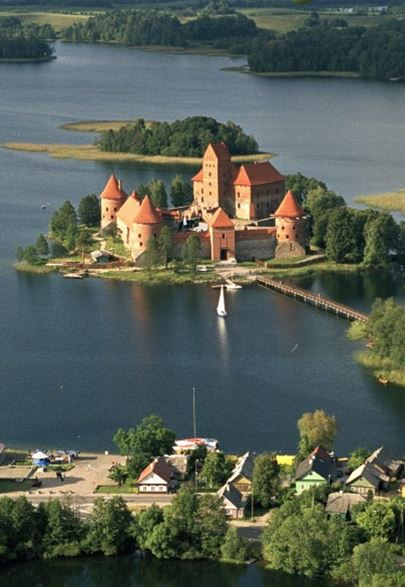
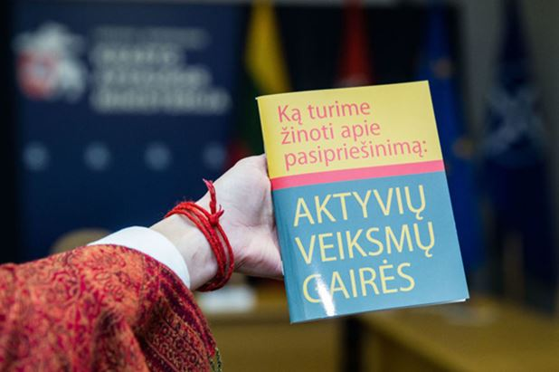
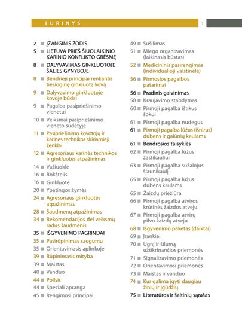
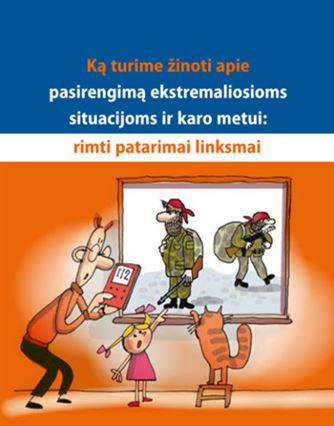

La première fois que je suis allé en Lituanie, c’était au début des années 90. Je suis resté près de trois ans. Assez pour parler la langue et vivre des expériences extrêmes, à tous égards. Je me suis fait deux-trois amis que je garderai à vie. L’un d’eux a fait des centaines de kilomètres en auto-stop pour accompagner mon errance lorsque j’étais retenu malgré moi en Pologne. Un autre m’a plusieurs fois sorti d’un mauvais pas, quand j’étais pris à parti par quelques jeunes nationalistes qui ne supportaient pas la vue d’un métèque. J’étais un Français raffiné pour les uns, et un immigré voleur de poules pour les autres. Je tairai par pudeur mes expériences amoureuses. Je me suis battu autant de fois que j’ai aimé. J’ai perdu plus que je n’ai gagné. Et pendant ces années-là, j’ai parlé avec toutes sortes de gens – des jeunes, des vieux, des paysans, des enseignants, des médecins, des hommes d’affaires. Tous avaient en mémoire, et fraîchement, pour ne pas dire « organiquement » de longues années de soviétisme, et une brève expérience d’indépendance.
Ils avaient chacun des histoires à me raconter à propos des périodes les plus sombres des dernières décennies, comme ils avaient des anecdotes à propos des belles choses que la vie l’Histoire leur avait donné la chance de vivre. Ils étaient lituaniens depuis des générations, ou bien russes installés là depuis plus ou moins longtemps, ou bien encore polonais. Evoquant mes amis, je peux dire qu’ils jouaient ensemble dans un groupe de rock – et qu’ils ont cessé de le faire depuis qu’ils une famille à nourrir. Ils amenaient leurs enfants dans les mêmes écoles, supportaient l’équipe nationale de basketball, et rêvaient d’un avenir radieux – qui les changeraient de celui qu’on leur avait promis paraît-il, et qui n’était jamais apparu. J’ai vécu trois années dignes d’un roman. Si j’avais le temps, la volonté, et le talent d‘un écrivain, j’en ferais un roman.
D’un réalisateur, un film. Cela fait donc plus de vingt ans que je retourne en Lituanie, au moins une fois par an, et souvent plus, ayant réussi le tour de force de marier projets professionnels et voyage d’agrément – en quelque sorte, car il s’agit plutôt d’un pèlerinage profane, un voyage vers soi.
Il y a peu, j’ai lu que le Ministère de la Défense lituanien distribuait des manuels pour lutter contre une invasion surprise de la Russie. N’étant pas naïf, et sachant que la Présidente de Lituanie, Mme Dalia Grybauskaitė est allée parfaire ses études à Washington dés l’indépendance du pays, comme quelques autres ministres, je me suis renseigné sur les intentions de l’homme de la Défense, M. Juozas Olekas.
Il se trouve que ce monsieur, a déclaré il y a moins d’un an, que la Lituanie était prête à servir de base militaire aux forces de l’OTAN, mieux, on lisait il y a peu un communiqué de son ministère qui disait « Nous considérons la Lituanie comme un centre logistique des Etats-Unis ». Tout est dit. Ou presque.
Car mes recherches m’ont amené à lire, dans un compte-rendu d’une réunion d’une commission politique de l’OTAN, ces propos inouïs de l’activiste pro-américain Olekas : « Il faut contribuer plus activement à la démocratisation du Bélarus ». Le Ministre lituanien suggérant « la création d'un centre d'information sur ce pays, centre qui pallierait les graves difficultés concernant l'accès des médias, et demande que des moyens politiques et financiers soient mis à la disposition de l'opposition bélarusse. »
Les ennemis d’hier sont donc les ennemis de demain. Une espèce d’ennemis comme celle-là est bien commode. Nous pourrions, nous, en France, éditer des manuels pour prévenir d’une intrusion allemande, ou mieux, anglaise, puisque les anglais sont nos ennemis de toujours – nos meilleurs ennemis si je puis dire. Les lituaniens devraient se souvenir que pendant la seconde guerre mondiale ils ont accueilli les Russes en libérateurs, pour le payer ensuite lourdement, apparemment. Ainsi, devraient-ils se méfier des américains et de « la force armée dissuasive de l’OTAN ». L’expansionnisme n’est pas là où on l’attend. Les européens que nous sommes savent bien d’où vient le bruit des bottes, et le désir même pas voilé d’hégémonie.
J’ai donc appelé mes amis lituaniens. On se retourne sur son passé, et c’est la mort qui vous saute au cou. Pas un ne contredisait cette démarche. Schizophrénie ambiante, aucun de ceux qui se réjouissent au quotidien de ce que la culture russe apporte au pays en venant sinon contrebalancer au moins endiguer une déferlante américaine ne trouvait à redire à cette distribution de paranoïde d’idéologue. Quant à mes amis russes de Lituanie, profondément attristés, choqués pour certains par l’ampleur d’une propagande russophobe, et bien entendu Poutinophobe, je les ai informé (il est toujours bon de prendre des distances) de ce que la Commission Européenne n’était pas très loin.
Alerté par l’Agence Sputnik, j’avais eu vent d’un rapport du 14 octobre 2016 sur la communication stratégique de l’Union visant à contrer la propagande dirigée contre elle par des tiers. Un rapport à l’initiative de … Brzeziński* et de personnalités polonaises qui ont déjà lancé une « initiative pour la guerre de l’Information » contre la Russie au sein du Center for European Policy Analysis (CEPA) à Washington. L’Otan a créé un Centre des Communication stratégiques en Lettonie et l’Union Européenne devrait se doter d’une structure équivalente. Il s’agit de centraliser tous les efforts de manipulation des médias. Le programme initial était d’ailleurs entièrement dirigé contre la Russie. Même si un volet a été ajouté contre Daesh.
Je savais que l’Union Européenne disposait d’un groupe de travail pour les communications stratégiques vers l’Est (East StratCom Task Force). Mais j’ignorais que ce groupe d’hyperactifs envoyait deux fois par semaine, par mail, à plusieurs centaines de journalistes, des éléments à introduire dans leurs articles en vue de discréditer les médias russes. Il semble que l’UE est particulièrement inquiète du développement de l’audience de Sputnik et de RT, en en général d’une imperméabilité à la russophobie chez certains sujets récalcitrant de l’Empire. On comprend mieux les positions de l’Etat lituanien, distribuant des manuels pour enfants comme des petits pains. Déjà soumis à un maître, sans aucune indépendance d’esprit ou d’action, il est naturel qu’il brandisse la peur d’une invasion. On reconnaît les esclaves à ce qu’ils ont peur de perdre leur liberté.
*Brzeziński a exposé sa théorie dans Le grand Echiquier, en 97. Son postulat étant que l’amélioration du monde, sa sortie du chaos, et in fine sa stabilité dépendent du maintien de l'hégémonie américaine. Considérant toute puissance alternative comme une menace pour la stabilité mondiale, Brzeziński est pro-européen. Il s’en explique, puisque selon lui ce leadership américain ne peut être pleinement réalisé et atteindre ses objectifs qu'en coopérant avec l'Europe.
« Sans l'Europe, l'Amérique est encore prépondérante mais pas omnipotente, alors que sans l'Amérique, l'Europe est riche mais impuissante. »
Voilà donc ce qui s’est passé toutes ces années depuis l’indépendance de la Lituanie. Le retour des fantômes qui effraient mêmes et surtout ceux qui ne les ont jamais vus. Les jeunes ou les enfants. Fantômes agités par ceux-là mêmes qui ont contribué si ce n’est provoqué les guerres de Yougoslavie, l’islamisation du Kosovo, la révolution orange entre autres révolutions colorées, etc. Je me souviens qu’en 2005, accompagné d’un jeune documentariste, je suis parti à la rencontre d’un homme dont j’avais aperçu la silhouette ascétique quelques années auparavant, lors d’une traversée solitaire de la campagne lituanienne. C’était le Père Stanislovas, qui résidait dans le village de Paberžé, berceau d’une ou deux insurrections. Il conservait des robes de prêtres, des livres, des objets liturgiques variés qu’il avaient sauvés de la destruction en bonne et due forme - le pouvoir soviétique ne voulant pas entendre parler de Dieu. J’avais proposé à mon compagnon de route de faire un documentaire sur ce moine capucin, figure nationale du patriotisme et de la ferveur religieuse. Mais ce documentaire n’a pas pu être tourné. Lorsque nous avons frappé à sa porte, une dame nous a ouvert, elle nous a longuement regardés, nous a demandé qui nous étions puis nous a conduit vers le Père Stanislovas. Il était couché sur son lit, incarnant sublimement ce qu’il était alors – un mourant. Il a tenu à ce que nous échangions, nous qui étions venus de loin, et lui qui partait bientôt. Et des heures durant, pendant les quelques jours qui lui restaient sur terre, il nous a raconté sa vie. S’il était la plupart du temps lucide, il avait parfois des crises délirantes, comme sous l’emprise de la fièvre. La dernière chose qu’il m’a confiée, à mi-voix, alors qu’il parlait des Russes presque en murmurant : « lorsque chacun retrouvera le chemin de Dieu, nous serons en paix, car nous n’aurons plus d’ennemis ». Je n’ai rien répondu et nous nous sommes quittés, définitivement. Il voyait juste. Les Russes ont retrouvé le chemin de la foi. Mais les européens ?
Méfions-nous, c’est quand on a peur des revenants qu’ils reviennent ; ou qu’on les fait revenir…
Partager cette page